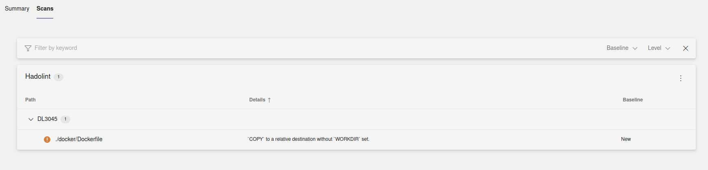
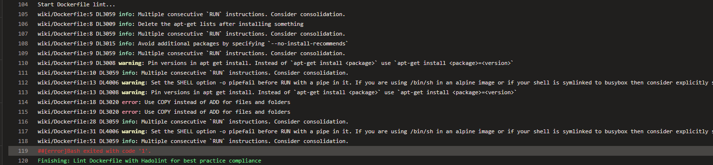
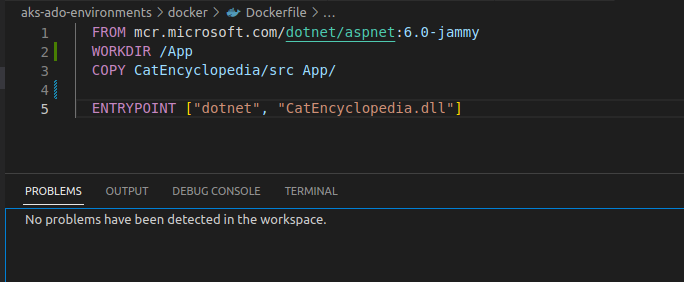

Applying Dockerfile Best Practices With Hadolint
In this blog post I would like to take a look at how we can ensure that Dockerfiles we create are of high quality and are following best practices in the industry. Tools like Hadolint make it very easy for us to do that and can automate the verification process.
If you’re working with containerized applications or are planning on containerizing an application you will most likely be working with a Dockerfile. Dockerfile is a variation of a text file (without a file extension though) where you define a set of instructions for assembling, configuring and starting up your application container image. Those instructions are then compiled during the build process (for example, with docker build command) and are packaged into an artifact, known as a container image, which may then be pushed to a container registry like Docker Hub or Azure Container Registry.
You can read more about it in official Docker documentation: Dockerfile reference
Hadolint - Introduction and benefits
Code linters help a lot with ensuring that the code you’re writing is following quality guidelines and a set of established best practices, both in the industry and in your organization (which you can define through custom rules if the linting tool supports it).
Dockerfile is not an exception. Tools like Hadolint can help you keep Dockerfile instructions clean, avoid unnecessary instructions and optimize existing ones. What I also like a lot about Hadolint is that it integrates with ShellCheck which is an open source tool that is used for static analysis of shell scripts, for example those that are written in Bash. This integration allows Hadolint to not only flag issues in the Dockerfile instructions, but it will also flag issues with shell commands that are a part of the same Dockerfile (for instance, commands that are executed as part of the RUN instruction).
Now let’s see how Hadolint can be installed and used for Dockerfile linting.
Installation and execution options for Hadolint
Hadolint can be installed from pre-built binaries, source code or as a Docker image. You can find more information about it in the official documentation which is linked in the “Additional resources” section below. If you’re using Visual Studio Code then you can also install Hadolint as a VSCode extension for integrating lint checks as part of local development routines. When it comes to CI/CD integration I could only find officially provided support for GitHub Actions: Hadolint Action. When it comes to Azure DevOps for example, there is no official extension for the same but I will show you how it can be implemented shortly.
A few configuration options that are worth mentioning:
--config [path_to_config_yaml]can be used to provide a path to a configuration file that can be used by Hadolint for customizing it’s execution to your needs. Configuration can also be provided as a command input but I prefer using a configuration file to keep it cleaner and better structured. All of the below properties can also be defined in the configuration file.--failure-threshold [rule_severity]can be used to define which discoveries should make Hadolint fail. For example, if you want it to fail in case any warnings and/or errors are detected, you can define it like--failure-threshold warning- in this case, all rules with severity warning or higher will cause Hadolint to fail.--trusted-registry [registry]is a very nice configuration option as well - it can be used to define which container registries are allowed to be used as part of theFROMinstruction of the Dockerfile. This is a good policy from the security perspective because it allows you to whitelist only a set of trusted container registries and prohibit importing base images from any other container registries. So if you would only whitelist your private Azure Container Registry you could define it like--trusted-registry kristhecodingunicorn.azurecr.io.--formatcan be used to specify which format you would like Hadolint to produce result report in. For Azure DevOps it may be worth considering using--format sarif, because then you could integrate the output of Hadolint to a dedicated tab in the build pipeline overview - I will show how it looks like in a jiff😊
Now, let’s see Hadolint in action!
Azure DevOps
As I mentioned above, there is no official extension for Hadolint in Azure DevOps but you can easily create a build task yourself for the same. You can either pull a Hadolint container image or use pre-built binaries. Personally I prefer to limit the amount of external images to be pulled as part of CI/CD pipeline, therefore I will show how you could use the pre-built binaries to run Hadolint. If you would like to use Hadoling Docker image it’s also possible to store third-party container images in your private container registry for additional security.
In the example below I have created two build tasks: one that downloads and executes Hadolint and outputs the results in a SARIF format. The second task publishes the report as a build artifact so that it can be consumed by the SARIF Azure DevOps extension and displayed in the Scans tab of my build execution overview:
# azure-pipeline.yaml
- job: Build
steps:
- task: Bash@3
displayName: Lint Dockerfile with Hadolint for best practice compliance
inputs:
targetType: 'inline'
script: |
echo 'Downloading Hadolint to lint Dockerfile...'
wget https://github.com/hadolint/hadolint/releases/download/v2.12.0/hadolint-Linux-x86_64
chmod +x hadolint-Linux-x86_64
mv hadolint-Linux-x86_64 hadolint
echo 'Start Dockerfile lint...'
./hadolint ./docker/Dockerfile -f sarif | jq > hadolint-scan.sarif
- task: PublishBuildArtifacts@1
displayName: 'Publish Artifact: Hadolint Dockerfile Scan'
inputs:
pathToPublish: 'hadolint-scan.sarif'
artifactName: 'CodeAnalysisLogs'

Below you can see another example of Hadolint output without SARIF extension, where all the findings are logged as part of the build task output. In this example Hadolint is configured to fail when warnings or more critical findings are detected. Command above can be modified like this (Dockerfile folder path is also updated to correlate with what’s shown on the screenshot):
./hadolint ./wiki/Dockerfile --failure-threshold warning

If there are issues that are not applicable to your specific use case you can suppress them by specifying them in the configuration file or directly in the command line. You can also specify any other relevant configuration in the same file to keep the execution command short and sweet. For example, below I have created a hadolint.yaml configuration file where I define both at what severity levels Hadolint must fail, which findings to ignore and which container registries are allowed to be used as part of a Dockerfile.
When you’re suppressing an issue, be it the one detected by Hadolint or another tool, it’s always a good idea to add a comment explaining the reasoning behind suppression. It’s helpful both for others accessing the file and for general accountability.
# hadolint.yaml:
failure-threshold: error
ignored:
- DL3009 # false positive, apt-get lists are deleted on line 13
- DL4006 # false positive, -o pipefail is set via explicit RUN statements on line 12 and 31
trustedRegistries: "kristhecodingunicorn.acr.io" # you can also use the wildcard pattern here, f.ex. "*.acr.io" to whitelist all Azure Container Registry repositories
Hadolint command can once again be modified to incorporate configuration from the file:
./hadolint ./docker/Dockerfile --config ./hadolint.yaml
GitHub Actions
There’s a GitHub Action provided by the Hadolint project maintainers so we can use it directly in our GitHub Workflow like this:
# myapp-gha.yml
- name: Lint Dockerfile with Hadolint
uses: hadolint/hadolint-action@v3.0.0
with:
dockerfile: ./docker/Dockerfile
failure-threshold: error
Please note that in case of Hadolint GitHub Action linting results are not being logged to the task output but are logged to an environment variable which is called HADOLINT_RESULTS. You can print it out with a subsequent GitHub Action, for example:
# myapp-gha.yml
- name: Print Hadolint lint results
run: echo 'HADOLINT LINT RESULTS => ${{ env.HADOLINT_RESULTS }}'
You can also save Hadolint output to a separate file to consume it for display or upload at a later point by providing output-file: <file_path> and format: <output_format> parameters to with section of the GitHub Action. You can also integrate PR comments based on the execution results - you can read more about it on the Hadolint Action page on GitHub marketplace: Hadolint Action
Local development (VSCode Extension)
It is a good idea to integrate some tools as part of the local development routines in order to detect potential issues and quality improvements early in the development lifecycle. Fortunately Hadolint can be installed as a VSCode extension. You can search for it directly in the Extensions tab of Visual Studio Code or check out it’s page on VSCode marketplace: hadolint.
If you’re getting an error message after installation that says that hadolint executable can’t be found it may be that you have saved it to an unusual folder. You can verify and update that by going to
Extension Settingsof Hadolint extension in VSCode and updatingHadolint: Hadolint Pathfield either in User or Workspace tab, or both.
Once it’s installed and you open a Dockerfile in VSCode you will get information about detected issues in the “Problems” tab of your VSCode workspace. Let’s take a look at a simple example.
Here I have a simple Dockerfile:
# Dockerfile
FROM mcr.microsoft.com/dotnet/aspnet:6.0-jammy
COPY CatEncyclopedia/src App/
WORKDIR /App
ENTRYPOINT ["dotnet", "CatEncyclopedia.dll"]
Once I open it in VSCode I can see that Hadolint gets into action and lets me know that there’s something I need to improve in my file:

You can also see from the screenshot above that detected issues are highlighted directly in the Dockerfile so that you can hover over them to read the same information that you can see in the Problems tab.
It seems like I have misplaced some Docker instructions. Since I am actually setting a WORKDIR, let’s move this instruction so that it happens before the COPY instruction.
Now our Dockerfile will look like this:
# Dockerfile
FROM mcr.microsoft.com/dotnet/aspnet:6.0-jammy
WORKDIR /App
COPY CatEncyclopedia/src App/
ENTRYPOINT ["dotnet", "CatEncyclopedia.dll"]
And once we save the changes, we can see that the warning disappears from the Problems tab:

Great work everyone, our Dockerfile has become a notch better!😺
Additional resources
- Hadolint VSCode extension: hadolint
- Hadolint source code on GitHub: Haskell Dockerfile Linter
- ShellCheck documentation: ShellCheck Wiki
- Docker provides some of the best practices for writing Dockerfiles in their official documentation: Best practices for writing Dockerfiles
- Azure DevOps SARIF extension: SARIF SAST Scans Tab
That's it from me this time, thanks for checking in!
If this article was helpful, I'd love to hear about it! You can reach out to me on LinkedIn, Twitter, GitHub or by using the contact form on this page 😺
Stay secure, stay safe.
Till we connect again!😻